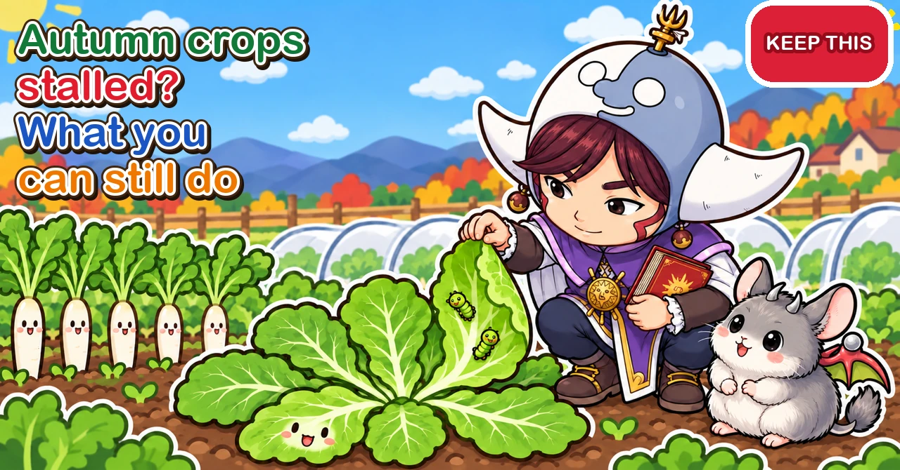
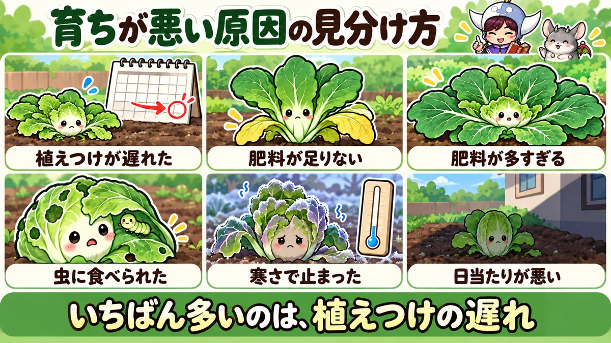
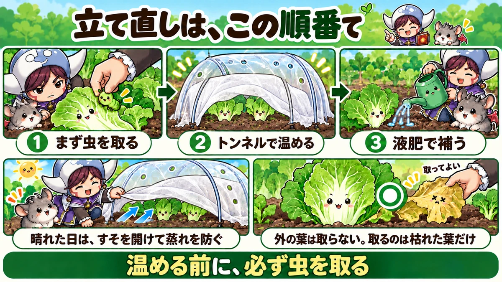

Autumn crops growing slowly 🥬 What you can still do

🥬 "It's November and my Chinese cabbage shows no sign of hearting up."
🥬 "The radish tops are huge, but the roots are still thin."
🥬 "My broccoli heads stopped at the size of a coin."
Hello, I'm Eiko. Eight years of growing vegetables organically and without pesticides, and a teaching licence in science.
When autumn-planted crops fall behind, it's easy to think "that's it for this year". But there's still something you can do. This article goes in order: how to find the cause, the fixes that still work, what to do with plants that won't make it, and how to avoid it next year.
Where you are: "Chinese cabbage" here is the tall, hearting napa type (hakusai); "radish" means the long white winter radish (daikon). Months are for central Japan, which has cold but mostly frost-light winters; shift them to match your own first frosts, and by six months in the Southern Hemisphere.
The essentials: the commonest cause is planting too late. The fix goes in this order — remove pests, then warm the crop with a tunnel or fleece, then top up with weak liquid feed. Warm before the cold really sets in, focus on daytime temperature, and never strip green outer leaves.
① The causes at a glance
1. Planted or sown late
- Signs: the whole plant is small, with few outer leaves; clearly smaller than the same crop elsewhere
- Fix: warm it with a tunnel or fleece to stretch the growing time. If it still won't make it, eat it as greens
2. Too little fertiliser
- Signs: yellowing from the lowest leaves up; new leaves pale too
- Fix: top up with liquid feed before it gets properly cold
3. Too much fertiliser
- Signs: dark leaves, lots of leafy growth, but no heart and no swelling
- Fix: stop feeding
4. Eaten by pests
- Signs: holes, droppings on the leaves, or the centre of a cabbage eaten out
- Fix: search under leaves and round the base and remove what you find. Plants with the centre eaten need replanting or another use
5. Stopped by the cold
- Signs: growth visibly stopped once it turned cold
- Fix: cover with a tunnel, putting daytime warmth first
6. Not enough sun
- Signs: a building or tree shades the bed from early afternoon
- Fix: make up with warmth this season; plant somewhere else next year

What this diagram says （図解の文字）
- How to tell why it's growing slowly
- "Planted late" ／ "Not enough fertiliser" ／ "Too much fertiliser"
- "Eaten by pests" ／ "Stopped by the cold" ／ "Not enough sun"
- "The commonest cause: planting late"
② Narrowing down the cause
1. Remember the planting date
Check a garden diary, a calendar, or the receipt from the seedlings. If you planted or sowed more than a week or two after the usual time for that crop, lateness is very likely the main cause.
2. Compare with neighbouring plants
If some plants of the same crop in the same bed are fine and others aren't, suspect something plant by plant: pests, a weak seedling, a patch of shade. If the whole bed is equally slow, suspect something affecting the whole bed: planting date, fertiliser or cold.
3. Look at the leaf colour
Yellow from the bottom up and pale new leaves: too little fertiliser. Dark leaves and lots of foliage: too much. Normal colour but just small: lateness or cold.
4. Look under the leaves and round the base
Holes or droppings mean something is there. With Chinese cabbage and cabbage, check the centre hasn't been eaten.
5. Check the hours of sun
In winter the sun sits low, so shadows from buildings and trees stretch much further. Look at the bed in the morning and afternoon and note when it falls into shade. A shadow you never noticed in summer can become the main problem in winter.
6. Check the soil moisture
Dig a finger into the soil a little way from the plant. If it's always wet, overwatering in winter may be weakening the roots and stalling growth.
③ Why autumn crops struggle to catch up
The growing window keeps shrinking
Summer vegetables grow faster as it gets hotter. Autumn crops do the opposite: they grow while the temperature falls day by day. Plant a week or two late and you lose that much warm growing time, and the plant can't reach full size before the cold. With autumn crops, the start matters most.
Hearting needs enough outer leaves
Before Chinese cabbage or cabbage can heart up, its outer leaves must be well grown. They catch the light and make the food that fills the heart. Around 20 outer leaves is often given as the point where hearting can begin. If the plant doesn't reach that before the cold, it never hearts.
Hearting needs a certain warmth
The best temperature for Chinese cabbage to heart is said to be around 15°C (59°F). Below that, hearting weakens; colder still, growth itself stops. Late-planted plants fail to heart because by the time they're ready, it's already too cold.
Growth slows sharply in the cold
The colder it gets, the slower vegetables grow. When daytime highs stay below 10°C (50°F), leafy crops like Chinese cabbage are said to almost stop. By December, a poorly hearted plant is unlikely to fill out much more.
④ Fix 1: find the pests first
Why pests come first
Warming a crop makes life easier for pests as well as plants. Cover a bed with pests still in it and they multiply under the tunnel, making the damage worse. Always search for and remove them before you warm anything.
Where to look
- Plants with holed leaves or droppings definitely have something on them
- With Chinese cabbage and cabbage, gently fold back the inner leaves one by one. If there are no holes near the centre, the culprit is often under the outer leaves
- Look under dead leaves at the base and where the stem meets the soil. Cutworms and armyworm caterpillars often hide there during the day
Droppings wash off
Leaves with droppings on them are still fine to eat once washed. But droppings mean the caterpillar is close by, so keep looking until you find it.
Plants with the centre eaten
If the growing point at the centre of a Chinese cabbage or cabbage has been eaten, that plant can't heart or grow any bigger. If there's still time, replanting may be quicker. If not, eat the outer leaves as greens.
Clear the aphids too
Aphids slow down in the cold, but under a tunnel they can wake up and multiply again. Before warming, clear any from the undersides of leaves and the new shoots.
⑤ Fix 2: warm the crop
A tunnel
Push tunnel hoops in over the bed and cover them with perforated polythene. The inside warms up and growth can carry on. In one example, soil temperature after dark was about 5°C (9°F) higher under a polythene tunnel than in an uncovered bed.
Layering with fleece
Several layers keep out the night chill (heat radiating away to a clear sky) even better: fleece laid loosely over the plants, then a polythene tunnel, then insect mesh on top. Another method is to slip a second layer of fleece between the plants and the polythene.
Daytime warmth matters most
Plants do most of their growing in the day, so warming them only at night achieves little. The aim is a tunnel that warms up during the day. On sunny days, though, a closed tunnel can overheat — use perforated polythene, or open the sides a little on warm, bright days to let air through.
Tall crops
Broccoli and cauliflower can be hard to fit under a tunnel. Laying fleece over the plants and weighing down the edges still takes the edge off the cold.
Putting up a tunnel
- Push the hoops in across the bed at even spacing
- Set them high enough that the leaves won't touch the polythene
- Lay the perforated polythene (or fleece) over the hoops
- Weigh down both ends and both sides with soil or clips so the wind can't lift it
- On warm sunny days, open the sides a little so it doesn't overheat
Do it on a calm day — in wind, the sheet catches and blows away easily.
Cover early
Once it's properly cold, warming can come too late. As soon as you notice a crop falling behind, cover it before temperatures drop right down. Plants that are already well grown usually carry on fine uncovered, so give the tunnels to the ones that are behind.

What this diagram says （図解の文字）
- Rescue it in this order
- "① Remove pests first" → "② Warm with a tunnel" → "③ Top up with liquid feed"
- "On sunny days, open the sides to stop it steaming up"
- "Don't remove outer leaves — only the dead ones" ／ "OK to remove"
- "Always remove pests before warming"
⑥ Fix 3: top up the feed
Signs of hunger
Lower leaves turning yellow and new leaves coming through yellow-green are the classic signs of too little nitrogen. You see it often in autumn greens and radishes.
Solid fertiliser works slowly now
A side dressing of solid fertiliser from late October takes a long time to start working, because soil microbes slow down as it cools. By the time it kicks in, it may already be too cold to grow.
Liquid feed, and soon
When you need a quick top-up, use liquid feed. It's already dissolved, so it reaches the roots even in cool weather. Give weak liquid feed a few times rather than one strong dose, and as early as you can, before it gets properly cold.
Go easy on nitrogen for hearting crops
Once Chinese cabbage or cabbage starts hearting, too much nitrogen can push leaf growth instead of hearting. For these, a feed higher in phosphorus, such as one made from chicken manure, suits better than a high-nitrogen one.
If the leaves are dark, don't feed
Dark, lush leaves on a plant that won't heart or swell is not a shortage. It may well be too much fertiliser, so hold off.
⑦ Fix 4: catch up on missed jobs
Late thinning
Crowded plants shade each other, air can't move, pests and disease move in, and every plant stays small. If you're behind, thin now. Where roots are tangled and pulling would drag out the plants you're keeping, snip at soil level with scissors. Eat the thinnings.
A missed side dressing
Autumn crops spread their leaves fast in the month or so after planting. Miss a feed then and the leaves stay small, and hearting or head-forming is delayed. If you forgot, top up with liquid feed before the cold sets in.
Smothered by weeds
Autumn weeds spread low across the ground for winter and can cover the base of your crops. Clear them to bring back light and air.
⑧ Check you're not overdoing it
Most failures are "too much"
When plants struggle, we tend to think something is missing. But many autumn-crop failures come from too much fertiliser or too much water. Before adding anything, check you haven't overdone it.
Too much fertiliser
Too much, especially nitrogen, makes soft, lush leaves that attract pests and disease, and leafy plants that won't heart or swell. Overfed onions can bolt in spring. Peas and broad beans that grow too big before winter are more easily damaged by cold. Don't keep adding feed just because growth is slow.
Too much water
In winter the soil dries slowly and plants take up less. Water as you did in summer and the soil stays wet, the roots suffer, and on cold nights the soil can freeze. In open ground under mulch, winter crops need hardly any watering.
⑨ Never strip green outer leaves
Outer leaves are the food factory
When the outer leaves of Chinese cabbage or cabbage sprawl flat across the mulch, it's tempting to pull them off. But they're the factory that turns light into food. Remove them and the plant runs short of the energy it needs to heart.
Only dead leaves come off
Yellowed, dying or diseased leaves can go. Leave every healthy green outer leaf where it is.
⑩ Don't miss autumn and winter pests
A warm autumn means a long pest season
When summer heat lingers, it can stay summer-warm until mid-October and pests keep going. Caterpillars that eat big holes, such as cutworms, carry on later than usual.
Some pests keep going in the cold
Aphids and cutworms are fairly cold-tolerant and stay active as it cools. Stop checking just because it's winter and the damage can spread without you noticing.
Leafy crops lose the most
So many autumn crops are grown for their leaves that pest damage cuts straight into the harvest — sometimes the part you eat ends up full of holes.
A daily walk round is the best defence
Even under insect mesh, pests get in through gaps or arrive on seedlings. Looking often and removing what you find on the spot is the surest defence. In a home garden, growing no more than you can walk round every day matters too.
⑪ Keeping plants from freezing
Small Chinese cabbages freeze easily
A small, loosely hearted Chinese cabbage has plenty of gaps between its leaves, so cold reaches the middle. In a cold snap it can freeze right through and spoil. If you judge it won't grow any bigger, harvesting and eating it before a freeze is a perfectly good choice.
Protect plants waiting to be picked
Even fully hearted Chinese cabbages waiting in the bed get damaged in hard cold, starting from the tips of the outer leaves. Lay fleece loosely over them, or tie the outer leaves up round the head.
⑫ Crop by crop
Is my Chinese cabbage hearting?
Look down on the plant. If the centre leaves are standing up and starting to overlap inwards, it has begun to heart. If the centre leaves are still open and spread flat, it isn't ready. Use this to sort plants into those worth warming to heart, and those for greens or spring flower shoots.
Chinese cabbage
Plants that have begun to heart may carry on if you clear pests and then cover them with a tunnel. Plants showing no sign of hearting can be eaten as greens now, or left to give flower shoots in spring. Hearted plants can open up their outer leaves in hard cold, so tie the outer leaves loosely round the head with string; the inside keeps better and you can harvest from the bed a little at a time.
Cabbage
Unhearted plants: as with Chinese cabbage, clear pests then warm them. A cabbage head, once formed, doesn't open again, so hearted plants can simply wait for harvest.
Radish (daikon)
Big leaves but thin roots usually means cold or lack of sun. A tunnel that raises the daytime temperature helps the roots swell. If cracks appear at the top of the root, harvest without waiting. Yellowing leaves are also a sign it's time.
Broccoli and cauliflower
If the heads stay small, keep them growing slowly under fleece or a tunnel. Even small heads may be better picked and eaten before cold damages them.
Coloured cauliflowers and romanesco
Orange, purple and green cauliflowers and romanesco vary a lot in speed between varieties. Planted on the same day, one may make a fine head while another is still small. Even a slightly late planting can leave them short of time before the cold, so stick to planting dates with these especially. Late plants can be kept under fleece and a tunnel and grown on slowly till spring.
Radishes need warmth and sun more than feed
Radish roots swell well even without much fertiliser. Healthy leaves but thin roots is more often cold, shade or late sowing than hunger. Think about raising the daytime temperature before adding feed.
Spinach, komatsuna and other greens
If they're behind, lay fleece directly over them or use a tunnel. If the leaves are pale, top up with liquid feed. Pick them as they reach an edible size, even if small.
Onions and garlic
Onions and garlic stay small over winter and do their growing in spring, so small in winter is normal. If frost heave lifts the seedlings, press them back in at the base.
Broad beans and peas
Size going into winter decides how they do in spring. Snap peas are said to winter best at around 10–15 cm (4–6 in) tall. Sown too early and grown too big, they're easily damaged by cold; sown too late and too small, they may not survive it. Cover oversized plants with fleece; keep small ones warm under a tunnel or fleece through the winter.
Lettuce, kale and similar
These are often thought to be pest-free and grown without mesh, but they aren't immune. If they're slow, check under the leaves and round the base too.
⑬ Chinese cabbage that won't heart: how to eat it
Eat it as greens
An unhearted Chinese cabbage is still a perfectly good leafy green. It lacks the sweetness of the white heart, but it's lovely stir-fried or blanched, like any other oriental green.
Eat the spring flower shoots
Leave an unhearted plant in the bed and in spring it sends up stems with flower buds. These are in the same family as the "nanohana" flower shoots sold in Japanese shops — tender, sweet and very good. Keep picking them before the buds open.
Thinnings and small plants too
Don't throw away small, late plants. Small Chinese cabbages and radish leaves are tender and good in soups or simply blanched.
Sort your plants
Warm the plants that have started to heart and grow them on as cabbages; put the rest to use as greens or spring shoots. That way nothing goes to waste.

What this diagram says （図解の文字）
- Uses for Chinese cabbage that won't heart, and next year's plan
- "Uses for unhearted Chinese cabbage": "Eat it as greens" ／ "Eat the spring flower buds" ／ "Hearted plants: tie up the outer leaves"
- "Next year": "Stick to the planting date" ／ "Net as soon as you plant" ／ "Give them space" ／ "Plant in a sunny spot"
- "Record the planting date and use it next time"
⑭ What to do with the space you gave up on
What you can still sow
If you pull out failed plants, think about what could still grow there. Komatsuna, spinach and baby salad leaves will keep growing slowly through winter under a tunnel or fleece and can be picked small. In central Japan, early November is the usual time to sow broad beans and peas.
Rest the soil for spring
If you plant nothing, you can dig the soil deeply in winter and leave it rough to the cold. Think of it as a rest before spring planting.
⑮ Keep a record
What to write down
- Sowing and planting dates
- Variety
- Side-dressing dates and what you used
- When pests or disease appeared, and what they were
- When you put up tunnels or fleece
- Harvest dates and rough sizes
Why bother
With autumn crops, the cause of a failure often lies months back at planting time, and it's hard to remember later. With a record you can see "planted two weeks late, so it didn't heart" or "this variety is slow", and use it next year. Just taking a photo of the plants on your phone counts as a record.
⑯ Next year
1. Stick to the planting date
This matters more than anything. In central Japan, Chinese cabbage goes in from mid-September to early October, and broccoli and cabbage during September. Delaying because of late-summer pests is what leads to no hearts and thin roots.
2. Net as soon as you plant
If young plants are eaten just after planting, they end up short of the leaves they need to heart. Cover them with insect mesh the day you plant to protect those first leaves.
3. Give them space
Crammed plants can't spread their leaves and get less light and air. Space Chinese cabbage about 45 cm (18 in) apart.
4. The right amount of feed, early
Give the first side dressing about two weeks after planting. Autumn crops spread their leaves fast in the first month, so don't let them run short then.
5. Running late? Choose the variety
In a year when planting will be late, choose varieties that heart even when planted late, or fast mini Chinese cabbages.
6. A sunny spot
The low winter sun throws long shadows that you never noticed in summer. Plant autumn crops where they'll get sun all winter.
7. Shady spots: grow things you pick small
Where sun is poor, avoid slow, big crops like Chinese cabbage, cabbage and broccoli. Greens you pick young, such as komatsuna and baby leaves, kept warm under cover, suit these spots better.
⑰ Through the season (central Japan)
- September: plant autumn crops; net them straight away; first side dressing two weeks later
- October: side dress and earth up; check for pests; if leaf colour is pale, top up early
- Late October–November: if crops are behind, clear pests, then cover with tunnels or fleece; top up with liquid feed
- December: harvest poorly hearted Chinese cabbage as greens or leave it for spring; tie up hearted ones
- January–February: fleece over small plants so they don't freeze
- March–April: pick the flower shoots from unhearted Chinese cabbage
⑱ Where advice differs
Does planting later mean fewer pests?
In a hot late summer, some gardeners delay planting to dodge the pests — and it's true that after late October there are very few, so damage drops. But the later you plant, the shorter the growing time, and that's what causes no hearts and thin roots. If you delay, have tunnels ready or choose late-planting varieties.
How much does warming really help?
A tunnel extends the growing season. But with short days and low temperatures, winter growth will never match autumn growth. Think of warming as a way to gain a little more size and prevent freezing, and don't expect miracles.
Does diluted vinegar perk plants up?
Some gardeners water weak onions and leeks with heavily diluted vinegar, saying it revives the roots and helps them take up feed. Some say it worked, but there's no clear evidence. If you try it, make it very weak and do it in the middle of a warm, sunny day. The basics of a rescue are pests, warmth and feed.
⑲ Common mistakes
Blaming everything on fertiliser
If the real cause is late planting, cold or pests, piling on fertiliser softens the leaves, draws pests and makes things worse. Narrow down the cause first.
Putting the tunnel up once it was already cold
Warming a plant that has already stopped wins back very little. Cover early, before temperatures fall right down.
Not clearing pests before warming
They multiply in the tunnel and the damage spreads.
Pulling off outer leaves
Fewer food factories, and no heart. Remove only dead leaves.
Scattering lots of solid fertiliser on slow plants
Once it's cold it works too slowly, and by the time it does, growth may have stopped. If it's urgent, use weak liquid feed.
Keeping the tunnel shut on a sunny day
It overheats and the leaves can scorch. Use perforated polythene, or open the sides.
Leaving a cracked radish in the ground
The crack widens and the root spoils. Harvest as soon as cracks appear.
⑳ Questions
My Chinese cabbage only started hearting in December. Will it make it?
If it has started, warming it may help the heart fill a little. Don't expect a big head, though — picking it smallish before cold damages it is a good choice.
My cabbage's outer leaves are stuck to the mulch. Can I remove them?
If they're green, leave them. They're making the food for the heart. Remove only leaves that have yellowed and died.
I don't have a polythene tunnel
Fleece laid directly over the crop helps on its own, and two layers work better still.
Can I just cover them at night?
Plants grow in the day, so warming them by day works better. Perforated polythene can stay on through the day.
If cold makes vegetables sweeter, shouldn't I leave them uncovered?
Fully grown vegetables do get sweeter in the cold. But small, late plants need to grow first. Warm the small ones and let the big ones sweeten in the cold. Even covered plants sweeten if you open the tunnel for a few days before harvest.
I planted small, weak seedlings
Small, spindly seedlings grow slowly after planting, and catching up before the cold may be hard. Keep them warm under a tunnel or fleece and grow them on gently. With crops like onions, which stay small in winter and grow in spring, wait and see until the spring feed. Next time, choose seedlings with good colour and thick stems.
When can the insect mesh come off?
Once it's cool and pests have dropped off. As a guide, numbers fall once the daily average stays below about 14°C (57°F). Cabbage caterpillars can still turn up after that, so keep checking. In winter, swapping the mesh for fleece or polythene to keep the warmth in is a good idea.
Should I pull out plants that are doing badly?
First think whether they could be eaten as greens or left for spring flower shoots. Diseased plants, or ones with the centre eaten that won't grow, can be pulled and replaced.
Do plants under a tunnel need watering?
Hardly ever in winter — the soil dries slowly even under cover. Water only when it's dry well below the surface, on the morning of a warm sunny day. Water in the evening and it can freeze overnight.
I'm late thinning and they're crowded. Should I still thin?
Yes — the plants you keep will grow bigger. Snip with scissors where the roots are tangled. Small thinnings are still good to eat.
🔬 The science: cold and how vegetables grow
Why nothing grows in the cold Plants get bigger by their cells dividing, and how fast cells divide depends heavily on temperature. In warmth they multiply quickly; the colder it gets, the slower they go, until below a certain point they barely divide at all. That's why vegetables stop getting bigger in cold weather.
Why hearting needs enough outer leaves Chinese cabbage and cabbage first spread their outer leaves wide to catch light and make food. Once there are enough of them, the next leaves to come stand upright instead of spreading, and overlap inwards to form the heart. The inner leaves grow by storing the food made by the outer ones. With too few outer leaves, the plant isn't ready to heart, and even if it does, there's too little food to fill it. The outer leaves are the foundation.
Why winter vegetables are sweet Plants exposed to cold turn the starch made in their leaves into sugar and store it in their cells, because sugary water freezes less easily than plain water. Winter Chinese cabbage and radishes taste sweet because the plants are protecting themselves from the cold. Even small, late plants get sweeter once they've had some cold.
Why shade matters more in winter The winter sun travels low across the sky, so buildings and trees cast much longer shadows than in summer. A spot that had sun all day in summer can be in shade by early afternoon in winter. Plants make their food from sunlight, so fewer hours of sun mean less food and slower growth. Shaded ground also stays cold, making the chill worse.
Why a tunnel keeps things warm By day, polythene lets sunlight through to warm the soil and air inside, and stops the warm air escaping. By night, the polythene or fleece blocks heat rising from the ground into the sky. With several layers, the air trapped between them holds the heat in even better.
To sum up
- ✅ Slow growth comes from late planting, too little or too much feed, pests, cold or shade — late planting most of all
- ✅ The rescue: remove pests, warm, top up with liquid feed. Always clear pests before warming
- ✅ With tunnels, daytime warmth matters most. Watch for overheating on sunny days
- ✅ Never strip green outer leaves — only dead ones
- ✅ Unhearted Chinese cabbage is still good as greens, or for flower shoots in spring
- ✅ Next year: plant on time, net straight away, give plants space, and choose a sunny spot
- ✅ Before adding anything, check for too much feed or water. Catch up on late thinning and feeding now
- ✅ Write down planting dates, varieties and feeding dates, and use them next year
Thank you for reading all the way to the end! When you find a plant that's fallen behind, start by looking under its leaves and round its base for pests. That's where the rescue begins 🥬
Thank you for reading!